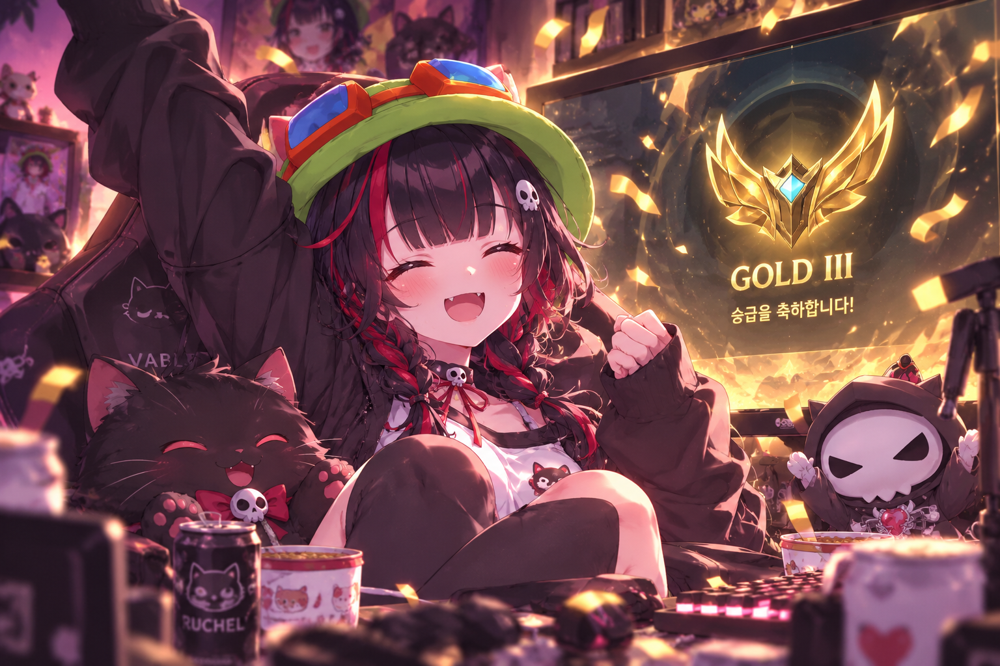
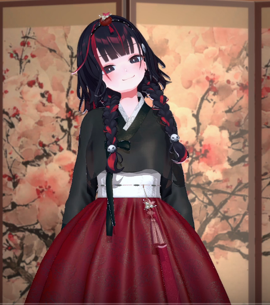

처음에는 24시간 노방종도 아주 조금 기대했지만... 진짜 열심히 하는 거 보고 있으니까 그냥 올라갔으면 좋겠더라 ㅋㅋㅋ
좋은 팀원들을 만난 판도 있었지만 그것만으로 올라간 건 아니라고 생각해. 계속 게임하면서 자기 몫 해내고, 결국 마지막에는 진짜 골드3까지.

증명의 날, 증명 완료.
마지막에 진짜 올라가는 거 보니까 나도 괜히 기분 좋더라.
축하해 루체리.
...근데 24시간 노방종은 사라졌네?
아쉽다는 뜻은 아닙니다. 진짜입니다. 💀ㅋㅋㅋㅋ
전날 그렇게 골드3 찍더니 다음 날은 추석이라고 한복 입고 등장 ㅋㅋㅋ

그리고 절망전에도 뽑혔고.
원래도 원딜인 루체리한테 이제 절망전이라는 목표가 하나 더 생겼네. 한동안 원딜 루체리 많이 보게 되겠다 ㅋㅋㅋ
잘 풀리는 날도 있고 꼬이는 날도 있겠지만 결과만 보는 것보다 그렇게 맞춰가고 연습하는 과정 보는 것도 나는 재밌으니까.
열심히 해봐 루체리. 원딜 루체리 응원하고 있을게 🍓
오늘도 루뱅알.
다음 기록에서 계속 📖
오늘은 드디어 절망전!
총 4판 해서 앞에 두 판은 이기고,
3번째 판은 아쉽게 패배. 마지막 이벤트전(?)도 패배!
사실 방송은 계속 켜놓고 있었는데
회사에서 보다가 피곤해서 중간중간 졸아버렸습니다 💀ㅋㅋㅋㅋ
그래서 제대로 못 본 장면이 꽤 많음...
그래도 드롭스는 받았다.
루체리 방송 보다가 이거 받은 거임 ㅋㅋㅋㅋㅋ 🍓
절망전 끝난 게 거의 00시였는데
00시부터 바로 베이블루 회의까지 잡혀 있어서 그대로 방종.
절망전까지 고생했다 루체리 🍓
루뱅알~ ♥️